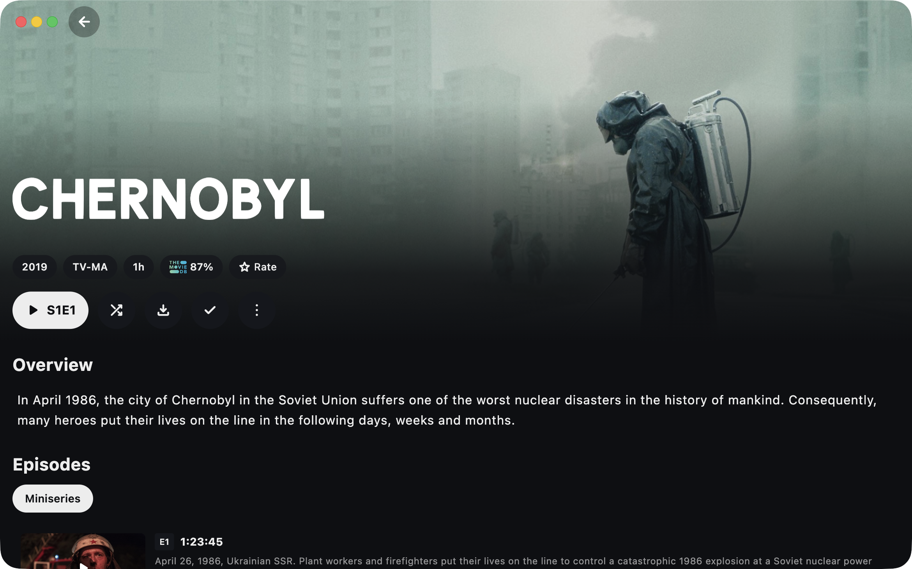
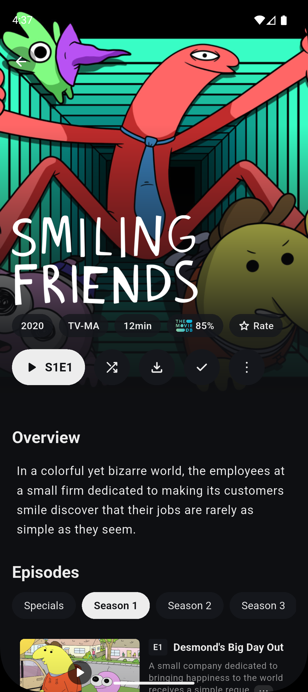
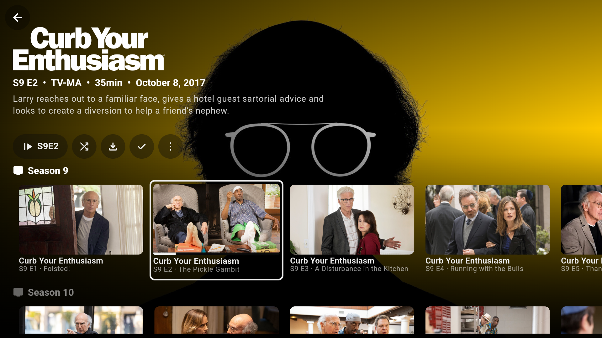

切尔诺贝利 · 详情
📺 10-Foot 遥控焦点
5 集全
CHERNOBYL
MINI-SERIES · HBO · 2019
TMDB #87108 · 豆瓣已同步
切尔诺贝利 · CHERNOBYL
IMDb 9.3
豆瓣 9.6
4K · Dolby Vision
DTS-HD MA 5.1
TV-MA
1986 年 4 月 26 日凌晨，苏联乌克兰境内的切尔诺贝利核电站四号反应堆发生爆炸。科学家、消防员与清理人在危机与掩盖中奋力拯救欧洲。
视频流HEVC 3840×2160 · 10bit
音频与字幕英语 DTS-HD · 内置简中 ASS
存储位置/夸克网盘/美剧/Chernobyl/
刮削数据TMDB #87108 · 豆瓣已同步
剧集列表
1:23:45
E1 · 1:23:45
1:05:12
E2 · Please Remain Calm
1:08:40
E3 · Open Wide, O Earth
1:07:19
E4 · The Happiness
演职员
JH
Jared Harris
列加索夫
SS
Stellan Skarsgård
谢尔比纳
EW
Emily Watson
霍缪克
JB
Jessie Buckley
柳德米拉
药屋少女的呢喃
Bangumi 8.6
1080p Hi10P
☁ 夸克
出身花街的药师少女猫猫被掳入后宫，凭借敏锐推理与药学知识揭开皇宫内频发的诡异悬案。
E1 · 猫猫
24 分钟 · 已看 65%
E2 · 严厉的侍女
24 分钟 · 未播放
现版 · Desktop Detailscreenshots/desktop-md.png

现版 · Mobile Detailscreenshots/phone-md.png

现版 · Tablet Detailscreenshots/tablet-md.png

现版 · TV Detailscreenshots/tv-md.png
